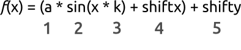

Enter parametrs of your graphic into text input fields and press "Plot" button.
Use "Zoom" button to select area You want to zoom.
Use "Pan" button to navigate through Your plot.
Use "Home" button to restore the default view.
Use "Add Graph" button to add and "Delete Graph" to delete additional graphs.
Use "Save Graph" button to save Your plot as an image.